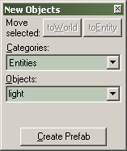
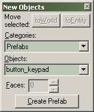

Toolbars: New Objects
The New Objects Bar controls multiple facets of creation within Hammer. Entities, prefabs, brushes – the creation of all of these can be controlled from here. The options available in the New Objects Bar reflect the category of object you are creating or editing – primitives, entities, or prefabs.
Primitives Mode
When you have the Block Tool selected and the Categories field set to Primitives, the following options are available:

toWorld Shortcut: CTRL+T
This function will remove any entity settings of the selected solid or group of solids. See Move To World in the Tools Menu for further details.
ToEntity Shortcut: CTRL+W
This function binds selected objects to create a solid entity. You need to switch to the Selection Tool to use this button. See Tie To Entity in the Tools Menu for further details.
Categories
When the Entity Tool is active, no categories are available. With Block Tool selected, there will be at least one category available: the "Primitives", which contain Hammer's five basic solid shapes: block, cylinder, spike, wedge, and the arch tool. If any Prefab libraries have been defined, then the library names will also be listed here.
Object
This list contains all objects that belong to the chosen category. For entities, the list contains all entity classes available. For solids, if the Primitives category has been selected, then this list contains the five types of primitives. If a prefab library has been selected, then this list contains all objects in the library. For more information on creating Arch primitives, see the Arch Properties.
Faces
This text box becomes active if the Block Tool is active, and either cylinder or spike is the current solid type. The value (which can be changed by either the keyboard or clicking on the arrows) represents the number of side faces the cylinder/spike will be created with.
Create Prefab Shortcut: CTRL+R
This will let you turn a selected object into a prefab object, which will be easily reusable. See Creating and Using Prefabs for more information.
Entities Mode
When you have the Entity Tool selected, the Categories field is automatically set to Entities, and the following options are available:

toWorld Shortcut: CTRL+T
This function will remove any entity settings of the selected solid or group of solids. You need to switch to the Selection Tool to use this button. See Move To World in the Tools Menu for further details.
ToEntity Shortcut: CTRL+W
This function binds selected objects to create a solid entity. You need to switch to the Selection Tool to use this button. See Tie To Entity in the Tools Menu for further details.
Categories
When the Entity Tool is active, no categories other than Entities are available.
Objects
This list contains all available point entity classes. Choose an entity you wish to insert from the list.
Create Prefab Shortcut: CTRL+R
This will let you turn a selected object into a prefab object, which will be easily reusable. See Creating and Using Prefabs for more information.
Prefabs Mode
When you have the Selection Tool or Block Tool selected and the Categories field set to one of the prefab libraries, the following options are available:

toWorld Shortcut: CTRL+T
This function will remove any entity settings of the selected solid or group of solids. You need to switch to the Selection Tool to use this button. See Move To World in the Tools Menu for further details.
ToEntity Shortcut: CTRL+W
This function binds selected objects to create a solid entity. You need to switch to the Selection Tool to use this button. See Move To World in the Tools Menu for further details.
Categories
If any Prefab libraries have been defined, then the library names will be listed here. Select a library from the list, and the Objects field will show the objects in that library.
Objects
This list contains all the objects in the prefab library chosen in the Categories field. Choose an object you wish to insert from the list.
Insert Original Prefab
Inserts the selected prefab into the center of the active 2D view. You can also use the Block Tool to insert a prefab and scale it simultaneously. See Inserting Prefabs for more information on inserting a Prefab object into your map.
Create Prefab Shortcut: CTRL+R
Creates a Hammer prefab object out of the selected objects. See Creating and Using Prefabs for more information.
© 2004 Valve Corporation. All rights reserved. Valve, the Valve logo, Half-Life, the Half-Life logo, the Lambda logo, Steam, the Steam logo, Team Fortress, the Team Fortress logo, Opposing Force, Day of Defeat, the Day of Defeat logo, Counter-Strike, the Counter-Strike logo, Source, the Source logo, Hammer and Counter-Strike: Condition Zero are trademarks and/or registered trademarks of Valve Corporation. Microsoft and Visual Studio are trademarks and/or registered trademarks of Microsoft Corporation. All other trademarks are property of their respective owners.